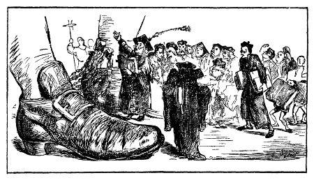
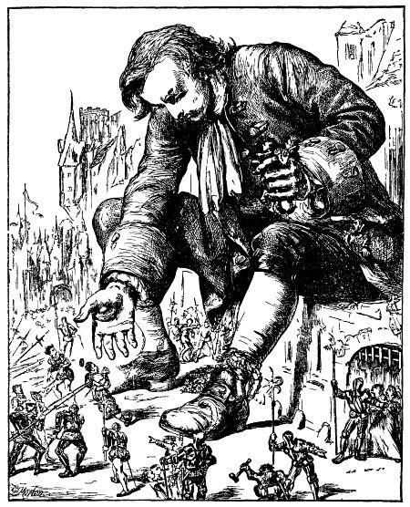

Vua nước Lilliput và đoàn tùy tùng quý tộc đến thăm tác giả lúc bị giam cầm - Miêu tả đức vua, con người và y phục - Những nhà bác học được chỉ định để dạy tiếng Lilliput cho tác giả - Vì tính tình hiền hậu, tác giả được ưu đãi người ta khám xét túi áo, kiếm và súng lục bị tịch thu.
Đứng dậy, tôi nhìn chung quanh, phải công nhận rằng tôi chưa hề thấy cảnh tượng nào xinh xắn nhường ấy. Vùng chung quanh giống như một khu vườn, đồng ruộng mỗi bề bốn mươi foot, có rào bao vây, trông như những luống hoa. Xen vào đồng ruộng là những khu rừng thưa rộng chừng nửa cây sào, cây to nhất hình như cao không quá bảy foot. Bên trái là thành phố, giống duy nhất trong đời. tôi làm một việc bẩn thỉu như vậy. Nhưng rồi chẳng thể không nghĩ rằng, bạn đọc yêu mến sẽ tha thứ cho tôi, sau khi suy nghĩ nghiêm chỉnh và vô tư về hoàn cảnh của tôi và cái bi đát trong trường hợp này. Từ hôm ấy, tôi tập thói quen làm cái nhu cầu tự nhiên ấy vào lúc mới dậy, ở giữa trời, sau khi đi hết sợi xích. Mỗi sáng người ta xúc cái của quý ấy vào mấy cái xe đóng kín. Hai người tí hon được chỉ định làm việc này. Tôi sẽ không miêu tả dài dòng việc này, thoạt đầu có vẻ chẳng quan trọng vì: nếu tôi không coi là cần thiết phải làm cho mọi người có một ý niệm chính xác về đức tính sạch sẽ của tôi. Bởi vậy, người ta kể rằng có những kẻ muốn ám hại tôi, thích thú làm cho mọi người nghi ngờ cái đức tính này của tôi.

Việc xong xuôi, tôi ra khỏi nhà hít thở không khí mát mẻ. Vua đã từ trên tháp bước xuống, ngài cưỡi ngựa, tiến về phía tôi. Ngài suýt phải trả một giá đắt. Mặc dù con ngựa rất tinh khôn, nhưng nó chưa hề trông thấy con quái vật như tôi. Trước cái núi biết động đậy, nó lồng lên. Đức vua, mặc dù cưỡi ngựa tài giỏi, chỉ có thể ngồi trên yên cho đến khi đoàn người hầu chạy đến ghì ngựa lại. Khi ngài đã xuống ngựa, ngài ngắm nhìn tôi, vẻ rất khâm phục, nhưng vẫn đứng ngoài tầm với của tôi. Ngài ra lệnh cho những tay đầu bếp và những người hầu mang cỗ bàn, rượu thịt ra cho tôi. Tức khắc, mấy xe được- chở đến. Tôi nhanh nhảu mang mọi thứ xuống. Khoảng hai chục xe chất đầy thịt và một chục xe chở nước uống. Mỗi xe thịt tôi ăn hai, ba miếng là hết, tôi đổ mười cái chum sứ chứa trong một xe vào miệng và tu một hơi. Những xe khác, tôi cũng làm như vậy. Hoàng hậu và các hoàng tử, công chúa, cùng đoàn nữ tì, dừng lại khá xa trên kiệu.
Khi xảy ra cái việc không hay cho con ngựa của vua, họ mới bước cả xuống đất và đến bên vua mà tôi xin miêu tả bây giờ. Vua cao hơn tất cả triều thần một cái móng tay của tôi, như thế cũng đủ làm cho mọi người phải khiếp sợ. Nét mặt cương nghị và cường tráng, cái miệng kiểu dân nước Áo, mũi khoằm, nước da ngăm ngăm, dáng đứng thẳng, thân mình, tay chân cân đối, cử chỉ duyên dáng và tư thế oai nghiêm. Ngài hai mươi tám tuổi, đã qua tuổi hoa niên và đã trị vì bảy năm đầy hạnh phúc, bởi vì ngài chỉ có chiến thắng. Để nhìn ngài được rõ hơn, tôi nằm nghiêng, mặt tôi ngang với mặt ngài. Ngài đứng cách tôi chỉ một fathom rưỡi. Song, từ ngày ấy, đã biết bao lần tôi cầm ngài trong tay, nên tôi miêu tả ngài chả thể sai lầm được. Y phục của ngài rất giản dị, cắt kiểu nửa châu Âu, nửa châu Á. Ngài đội một cái mũ bằng vàng nạm ngọc, cắm một cái lông chim. Ngài cầm trong tay một thanh kiếm, sẵn sàng tự vệ nếu tôi bẻ gẫy xích. Kiếm dài tài ba inch, đốc kiếm và bao kiếm bằng vàng nạm kim cương. Giọng nói thanh, rất trong và rõ ràng, ngay khi tôi đứng tôi cũng nghe rõ từng tiếng một. Các công chúa cùng các cung tần mỹ nữ và triều thần ăn mặc lộng lẫy, nên nơi họ đứng làm ta hình dung như một cái váy thêu hoa vàng và bạc, trải xuống đất. Đức vua luôn miệng nói chuyện với tôi và tôi đáp lại, nhưng chúng tôi không hiểu nhau đến một tiếng. Một số nhà tu hành và luật gia (tôi đoán vậy, theo y phục của họ) dự vào câu chuyện của chúng tôi. Họ được lệnh nói chuyện với tôi, tôi đáp lại bằng tất cả mọi thứ tiếng mà tôi biết loáng thoáng, tiếng Đức bình dân, tiếng Đức bác học, tiếng Latin, tiếng Pháp, tiếng Tây Ban Nha, tiếng ý, tiếng pha tạp Franca[1] nhưng đều vô hiệu. Khoảng hai giờ sau, các vị rút lui. Tôi được một đội cận vệ canh giữ không cho đám người đông đảo hỗn xược và độc ác cứ định đổ ào vào tôi. Có kẻ táo bạo nhằm bắn tôi mấy mũi tên lúc tôi ngồi ở bậc cửa, có mũi suýt trúng mắt trái. Viên sĩ quan chỉ huy tức khắc cho bắt sáu kẻ cầm đầu, và nghĩ rằng cách trừng phạt tốt nhất là trói họ lại, nộp cho tôi. Những người lính lấy ngọn giáo đẩy họ vào đến tầm với của tôi. Tôi túm lấy cả bọn, nhét năm chú vào túi áo. Còn chú thứ sáu, tôi làm ra vẻ muốn nhai sống. Chú ta thét lên khủng khiếp. Viên sĩ quan chỉ huy và các sĩ quan khác rất lo lắng nhất là khi thấy tôi rút con dao ở túi ra. Nhưng họ hết sợ hãi ngay khi thấy tôi nhẹ nhàng cắt dây trói và khẽ đặt chú ta xuống đất. Chú ta chạy bán sống bán chết. Tôi móc ở túi ra từng chú một và làm y hệt như vậy. Tôi nhận thấy vẻ xúc động mạnh mẽ trên nét mặt những người lính và dân chúng trước lòng rộng lượng của tôi. Câu chuyện này đến tai vua cùng triều đình, và có lợi cho cuộc đời tôi sau này.

[1] Một thứ tiếng pha tiếng Ý, tiếng Tây Ban Nha và tiếng Thổ Nhĩ Kỳ, dùng trong việc buôn bán ở Cận Đông. (N.D.)